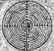
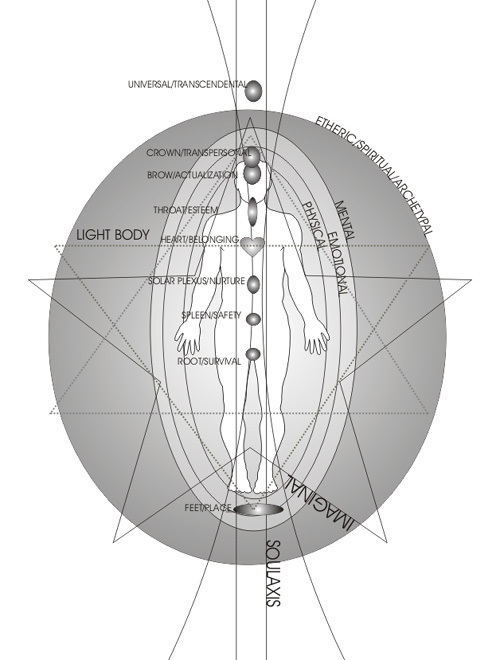

INTRODUCTION
Living the love, intelligence and power of our soul nature is the key to transforming ourselves, our communities, societies and cultures. The guiding principle of the mystery school is to draw-out, illuminate, and apply the ancient teachings that are inscribed in the spiritual heart of each person, as well as, the mystery teaching that are embedded in the sacred geometries of our light-bodies, encoded in our DNA, and symbolized into the fabric of our lives. In the mystery teaching, each person is on a sacred mission to awaken to Soul, to create a conscious affiliation with the spiritual realms, and to actualize multi-dimensional resources. We live in a time when we can fulfill this mission now, rather than later, or much later. The choice is ours, and the propitious time is eminent.
One of the unique features of this mystery school is the way it is facilitated. I am very conscious of the energy field of the class, and the spiritual resources that guide my relationship to the transformational needs of each participant. By merging the spiritual dimensions into the present focus of each class, we are empowered to transform limitation, restructure our minds, awaken our hearts and infuse our reality with the frequencies of the Soul and Spirit. As we realize the Teachings of the One, our true nature and relationship to the universe unfolds. Noegenesis means to gain new understanding directly from experience. In the present moment, we form a nexus with eternity and the truth of the mystery is given to us.
Ancient Mysteries/Timeless Schools
From a dimensional perspective, ancient is the timeless present. That which is past and future exist as dimensional realities of the present. In the present, we can minister to our past and our future. Each now, we choose our probable future. In the ancient mystery schools, students were presented with wisdom and practices that awakened spiritual consciousness and expanded perceptual skills. Challenges were created that transformed psychological limitations and inhibited the creative flow of spiritual energy. Various initiations provided direct linkage to transcendental sources of understanding, healing and grace. In present times we enfold the past into modern needs. As in ancient times, we approach life itself as our textbook: the mysteries are revealed to us by reflecting the inner worlds through the metaphor of living, the challenge of relationship, and harmony with the natural world.

Literally, noegenesis is from the Greek noetic, and means to apprehend new understanding directly from experience. Noetic means spiritual mind. The genesis of spiritual mind is in the absolute present. When we are regretting the past, worrying about the future, adversely oriented to challenges, or poised in fear, our perception is bound to the third dimension. In the total now, experience itself is knowing, and we realize that we are living in a multidimensional reality and unfolding eternity. It this way we gain the ability to apply the ancient timeless wisdom to modern challenges. Participation in the school awakens our noetic faculties, spiritual mind, and the soul’s capacity to know directly from the inner fabric of creation itself. "To know as the God’s know."
The Heart of Learning
The essence of love forms the essence of noegenetic learning. The impetus to learn is much like the archetype of the "beloved." Our longing for home, wholeness, and soul-mate are a-priori intentions (archetypes) that motivate us to explore and to understand. Love provides the intimacy, and trust provides the format for our dialogue with life, and with holiness itself.
The intentions of noegenetic learning are discovery, understanding, and fulfillment. George Washington Carver is an intriguing example of noegenetic learning. He could see through appearance into the essence of things. His mind-set, and loving heart, enabled him to perceive the truth in his present experience. He knew that each thing has its nature, and that all we need do is to see it and to ask the purpose of its creation. Carver is well known for his work at Tuskegee Institute. He was a practical scientist whose discoveries made a significant contribution to the agrarian economy of the South. Especially noted are his many discoveries for the use of peanuts. His approach was first to speak with the essence of the plant, and then detail in the laboratory what he perceived. The laboratory results were then applied as a material science. Carver was convinced that God created and sustained the universe, and expressed through everyone and everything, and he conducted his science accordingly.
Principles of Noegenetic Learning
The distinction between noegenetic and traditional learning is in the understanding of human nature, how we learn through unity, the true function of perception, and the structure of reality. The three dimensional reality reflects a multidimensional reality. It is a mirror. When we are secure in our sense of soul as the organization of our relationship to reality, we are ready for noegenetic learning. Noegenesis is the soul’s way of knowing. When perception forms from essence, there are no shadows. Soul gives us the ability to unravel deceptive beliefs and interpretations of life. Jesus called it being in the world but not of it. Lao Tse called it the Way. Mohamed call it the One. Life can then become a management concern, and survival, safety, shelter and nurture are relegated to eternity. We become fearless, common sense managers.
You and the Call
We do live in a time of great spiritual opportunity. Increased spiritual energy is flooding into the world, and circumstances are pressing us to shift to a deeper level of psychological and spiritual center. When selecting students for the Noegenesis mystery school, I look for individuals who are sensitive to this spiritual opportunity and are feeling the inner "call."
The spiritual, religious or philosophical background of the applicant, whatever it is, forms a context for embarking on the mystery school adventure. I was raised in the Baptist faith. It was a wonderful foundation. Baptists are encouraged to seek a personal relationship to God. I took them at their word. The Holy Spirit responded by opening my perception to the esoteric levels of the scriptures. It came as a sweet, soft energy that amplified my intelligence and warmed my heart. My expanding spirit was too much for the dogmatic constraints of my Baptist teachers. I embarked on an "adventure of spirit." The sky of my mind opened and invited me into celestial realms. This is one example of a "call" to spirit.
Our experience of the "call" is often less dramatic. It can be as simple as a discomfort with one’s life. One’s religious life, or lack of it, may become less satisfying. On the other hand, you may have been on a spiritual path with many satisfying experiences. You may be studying with a spiritual teacher. In these cases, the noegenesis mystery school may serve to complement your journey. The teaching is not in conflict with any spiritual or religious approach that fosters the spiritual integrity of the individual. All genuine teachings are mutually supportive. In the teachings of unity, there is no adversity or jealousy toward any source of grace.
Noegenesis may not be for everyone. This does not imply a comparison that ranks world views as better or less. Our destiny is written in our hearts and we must be true to that above all else. As we fulfill our natures, we awaken to our way home. If you find this reading appealing, please join me and the others. The experience is well suited to challenge the capacity of your mind, respond to the sensitivity of your heart, and capable of engaging you in the rich and fertile fields of your soul.
CURRICULUM
The curriculum is structured into six long weekends, meeting once a month for six months, or, for example when I travel to Europe, five day blocks are scheduled every two or more months apart. The entire basic course is the equivalent of fifteen days. Some of the course elements are:
We develop the skills and understanding of self as energy. Through focus, image, and feeling we connect with and navigate the multidimensional reality of the noetic field. In this way we are able to explore the nature of consciousness and perception, and activate, align, and balance our spiritual center.
We explore the developmental and incarnational dimension of our genetic nature. Central to this phase, we develop the skills and understanding to restructure and transform our time-line psychology into a unified, field psychology. Healing trauma and balancing the noetic field is an aspect of this process.
As a means of integrating and empowering our archetypal tonal and light codes, we develop a soul mandala. This mandala reflects our innate character and destiny as a developmental process of soul actualization.
We develop and apply basic energy skills. The noetic field is a unified field of love and intelligence. The universe is composed of elemental particles of light and sound. These particle form into the fabric of creation. Sound and light codes form the archetypal patterns of creation. When we connect energy and form through creative imagery and field body integration, we can creatively connect directly to these underlying realities.

Through our energy field, or aura, we master our personal life matrix. The aura reflects our integration, balance and alignment with the merkaba and psychological field. The merkaba is our light body. The nexus of the aura and light body enable us to further activate the potential of our DNA.
Soul transcendence and ascension are spiritual sciences of transformation. Ascension enable us to evolve through the magnetic realms of light and soul transcendence enables us to return directly home through soul travel. I work with both of these mystery teachings. My teaching mantel enables me to synthesize various spiritual paths, facilitate light body activation, guide the integration of the personality and the soul/high-self matrix, while serving as an emissary of soul transcendence. I study with teachers that can initiate individuals into the sound current and soul transcendence.
When we approach our nature holographically, we discovery that we are multidimensional, living in a space-time matrix and on many other realms simultaneously. "In my house there are many mansions." We are a microcosm of the whole. Through this nature, we can discovery the expression of holiness in all things.
Intentional Learning
In the Noegenetic mystery school we meet through the intention to awaken. A context is enjoined, permitting higher consciousness to show the way, and respond to ripening opportunity. My role as teacher is to place my alignment and mastery in service to the student’s awakening, transformation, and metamorphoses. My skill is to create an uplifting focus while remaining vigilant to the movement of energy and spiritual guidance. Learning is experiential. Understanding occurs as an unfolding perceptual experience. My ability is limited by the scope of the student’s willingness to engage and to respond.
Life’s Code
The mystery school shifts our center from ego mind to spiritual mind. Our life is the unfolding curriculum of our Soul. The genetic code that contains the potential of the soul is embedded in life itself. The DNA is a facilitator of our soul matrix, psychological maturity, light nature, and physical body health. Life stimulates our encoded potential.
As we loosen the sedimentation of limiting beliefs and we transcend the ego mind into the spiritual or noetic mind. When this occurs, new understanding spontaneously unfolds, encoded consciousness activate, and perception shifts. In this process, we become experientially aware of the archetypal intentions and the soul essence, and our center shifts from the ego to the soul. The fabric of Soul is sustained by holiness, infusing all the realms of our expression.
We awaken, transform and metamorphose our spiritual genetics (and perhaps their physical counterparts) through focusing our will, opening our hearts, engaging life, reflecting on experience, and making choices. The keys to the mysteries are embedded in the structure of life. In the noegenetic school, the student develops the skill, understanding, and initiation to unlock the mysteries of life.
Impetus of Destiny
We each have a destiny. Ultimately our destiny is fulfilled as we awaken to, identify with, and align with the realization that our true nature is as an aspect of the Divine, a holiness, that is the individual awareness of universal loving and intelligence.
When I was growing up, Jesus and Mary were presented to me as moral ideals that I must strive to live up to, while also being told that I could not hope to reach their stature. Through the years, I came to realize that there was a deeper dimension of this mystery. In truth, the incarnation of Jesus and Mary (for that matter Buddha, Rummi, Lao Tze, and others, as well) presents a resonating force, challenging me to awaken to the same level of holiness that they represent. In some ways this is a very radical approach to understanding our humanity. At the Council of Nicea, in 325 AD, the teachings of Christ became politicized and many of the teaching were put aside, especially those that stress the primacy of our innate holiness, and the re-embodiment of the evolving spirit. Soul awakened people are hard to dominate. An equivalent "spin" exists in every tradition. This viewpoint gives us some perspective on why we experience so much pain, and project so much violence and environmental destruction when we are totally identified as ego.
Each destiny has a karmic flow. I like this terminology because it reflects that embedded in the archetypal structure of our lives we carry a tailor-made curriculum outlining our learning objectives for this life. Each event symbolically reflects the skills and understanding that we want to gain and to weave into our constitution as part of the soul’s eternity. The term flow implies that consciousness is a fluid energy that is influenced and directed by our dynamic structure.
Soul’s Laboratory
Our lives are a laboratory of the soul. As we realize and claim that perspective, we are able to increasingly live in grace. In noegenetic learning, our lives are the mystery school. Experience and the choices we make in response to experience constructs our ego/soul matrix. Jung called this process individuation.
Once events are encoded into beliefs, they shape our personality. We own them, and, reciprocally, they "own us." We can do with them what we will. We can forgive ourselves for the limiting beliefs, and affirm the expansive beliefs. As we transform and reconstruct our past actions (as they exist in our life-field), we change our present. As we align and balance the dimensions of personality and soul, we access the greater noetic field of divine awareness. In this activity, we explore our developmental and transcendental expressions as a means of awakening and living our holiness.
Noetic Field
Essential to the mystery teaching is an understanding that self and spirit are a unified energy field that is present, accessible, and combines individual and universal characteristics. Perception and the science of using consciousness to discover and know, called phenomenology, are central to learning noetic skills. An essential conversion is the shift from an ego center to a soul center. The vehicle of this conversion is the formation of the noetic, or spiritual mind. To understand and master this conversion, we need to understand the nature of consciousness as energy. To help us, I developed the concept of the noetic field. The noetic field is an interacting psycho-spiritual energy that has an implicit intelligence, and knows how to interrelate and synchronize with all elements within the coherent system. We are a microcosmic noetic field, and the universe is a macrocosmic noetic field. The field we call the human aura is an element of the noetic field, and links the light body and genetic matrix.
As we attempt to understand the life field in which we live, and out of which we are made, our science increasingly develops whole-systems models as the best understanding of our data and experience. Physics is progressing into a model that describes reality as an energy field that contains a primary implicate (non-local) intelligence, and that causes, and sustains, the material world. This trend is reminiscent of the ancient Greek’s use of the term nous and noetic. "Nouse" is the intentional, purposeful intelligence that controls and orders the world of matter. Nous emerges from the void as the wind of spirit or the first emanating spirit of creation. Essentially, it is the "word made flesh."
At this level, the noetic field is a sustaining, nurturing, intelligent, unified life field that is universally present. Parallel to the emerging scientific terms–such as David Bohm’s "implicate order" and "non-local causality," and Edwin Close’s "primary consciousness," and the creationist’s "agency"–this field can be compared to grace, dharma, nirvana, or heaven. As noetic beings, we have the capacity to generate a noetic field and, by so doing, interface with the universal noetic field. Looking through a phenomenological lens, we are, as a whole system, a noetic field that constitutes the correlation between our ego and soul dimensions. Our psychological formations represent a localized clarity, or distortion, that influences the alignment and balance of our entire field of energy.
In the noegenetic school, we will learn to form nexus points, or connections, to the universal noetic field. We will learn noetic mastery through awakening and aligning the resources within the chakras, or consciousness centers, that coordinate and energize our physical, psychological, and spiritual bodies. Meditation and spiritual practices are an integral aspect of the educational experience.
Mandala of the Soul
Throughout the ages, art making was a powerful force in teaching the mysteries. In Noegenesis, we employ art-making as a bridge between the unfolding and enfolding dynamics of consciousness. The outer act of making art sensitizes us to the mirroring of life. We learn metaphor, symbol, and sensitivity to energy, color and texture. By reflecting on the images we make, we activate an inner dialogue.
As we "draw" on the inner canvas of imagination, we light up our inner dimensions. Doors open, and higher consciousness responds by "drawing on the other side of the canvas." As we make external art, Soul and the sentience of the spiritual worlds use our heart, mind, and hand to "draw with us." Our hand and eye flow in unity with all. We may enter a special moment when we experience the phenomenon of "many realms touching through one hand." Perhaps the "sound of one hand clapping" is the "music of the spheres." The standard of beauty for this kind of art, I call congruency. When art is congruent, the reflective, constructed image resonates with the Soul. This congruency reflects as a felt sense of power, aesthetic radiance, presence of energy, intuitive resonance, and charisma when the artist speaks truthfully about the images. The archetypal realm opens to us, revealing the cosmic reflection of the mirror within. Character and Soul destinies unfold, revealing the power, potential, and providence of our lives. Art making forms a natural link to the unfolding and enfolding characteristics of the noetic field, healing deep structures and revealing the Mandala of the Soul.
INVITATION
The answers to all questions exist deeper within the fabric of the experience that produced the question in the first place. This is a quantum reality referred to by David Bohm as the "implicate order of a continually enfolding universe. Jesus called it the "heaven . . . at hand." This viewpoint requires us to shift from a science and theology based on the dualistic premise of consciousness evolving from the time/space reality of the physical world, and invites us to embrace a unified field premise, in which an "agency," or "primary" consciousness, precedes, creates, and sustains the time/space physical world.
The times we live in present the opportunity to awaken to genetic potentials that are new to the history of our collective experience. The chaos of these times invites a higher level of organization. Human consciousness is an integral force in this transformation. Our opportunity is at hand.
©Copywrite, Robert D. Waterman, 2003
Source: http://www.mystery-school.com/noegenesis-mystery-school.html